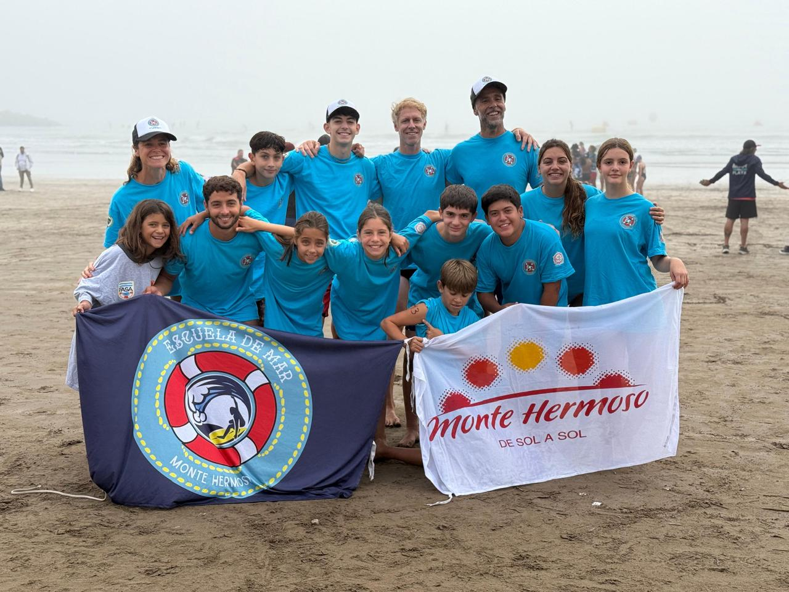

Salvamento Deportivo
ENTRENAR. APRENDER. SUPERARSE.
Una nueva disciplina deportiva crece en Monte Hermoso.
MENORES · CADETES · JUVENILES
¿QUÉ ES EL SALVAMENTO DEPORTIVO?
Una disciplina que transforma habilidades vinculadas históricamente al salvamento acuático en pruebas deportivas.
Combina natación, carrera, resistencia, velocidad, dominio del medio acuático y técnicas específicas dentro de un contexto de entrenamiento y competencia.
NO HAY QUE SER GUARDAVIDAS PARA PRACTICAR SALVAMENTO DEPORTIVO.
Es un deporte. Niños, niñas y adolescentes pueden comenzar a entrenarlo progresivamente, con desafíos adaptados a cada etapa.
UN DEPORTE. MUCHAS CAPACIDADES.
Nadar
Eficiencia y confianza en el agua.
Correr
Velocidad, resistencia y adaptación.
Entrar al mar
Desplazarse con eficiencia en la rompiente.
Entrenar
Desarrollar capacidades físicas y técnicas.
Resolver
Interpretar situaciones y tomar decisiones.
Competir + equipo
Aprender de la experiencia y de los demás.
ENTRENAR EN NUESTRO AMBIENTE
EL MAR.
El viento cambia. Las olas cambian. La corriente cambia. La playa cambia. El deportista aprende a observar, adaptarse y resolver.
CATEGORÍAS
Menores
Primeras experiencias deportivas y habilidades generales.
Cadetes
Progresión técnica, física y deportiva.
Juveniles
Mayor especificidad de entrenamiento y preparación deportiva.
ESCUELA DE MAR → SALVAMENTO DEPORTIVO
Descubrir el mar → aprender a desenvolverse → desarrollar habilidades → entrenar → practicar Salvamento Deportivo.
No todos tienen que elegir este camino. Es una nueva posibilidad para quienes quieran seguir creciendo y entrenando.
ENTRENAR EN EL MAR. CRECER CON EL MAR.
Deporte. Técnica. Compañerismo. Superación.
EN EL MAR TAMBIÉN SE APRENDE.
Consultar entrenamientos →